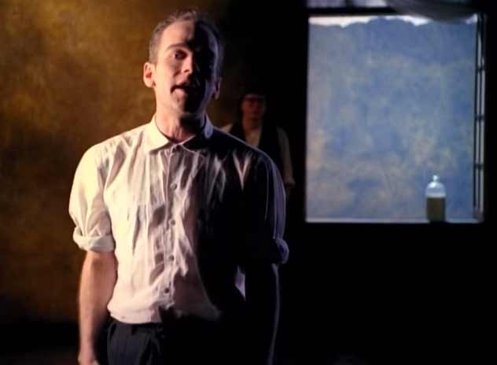

Do o grunge ao punk, o rock dos anos 90 renovou o gênero e, sem dúvida, o R.E.M teve grande contribuição, sendo apontado como a banda pioneira no rock alternativo. O destaque fica para o hit Losing My Religion, que, apesar do nome, tem um significado distante da visão religiosa.
Formado em 1980 por Michael Stipe, Peter Buck, Mike Mills e Bill Berry, o R.E.M se tornou uma das bandas mais famosas do rock alternativo, com cerca de 15 discos lançados e diversos hits que marcaram a carreira da banda. A música Losing My Religion foi uma mais tocadas na rádio nos anos 90 e agora a gente vai entender melhor o significado da letra:
À primeira vista, a música Losing My Religion pode causar uma certa confusão, dando margem para imaginarmos que se trata de uma canção que fala sobre religião. Mas não é bem assim. Presente no álbum Out of Time, sétimo da discografia do R.E.M, Losing My Religion é a música mais popular da banda, tendo sido presença frequente nas paradas de sucesso dos anos 90.

O título Losing My Religion se refere a uma expressão bastante comum nos Estados Unidos, mais precisamente no Sul do país e insinua que a pessoa chegou no limite, perdeu a fé e está cansada. Sabe quando alguém meio que gastou toda a energia, acaba perdendo o equilíbrio e dá um baita piti? É mais ou menos isso. Portanto, a música não fala sobre fé de forma literal, e sim retrata um personagem que parece estar no seu limite e um tanto decepcionado por conta de um amor não correspondido.
O próprio Michael Stipe, vocalista do R.E.M, chegou a declarar que queria escrever uma música sobre amor não correspondido e obsessão. Na época, o vocalista comparou Losing My Religion com o sucesso do The Police, Every Breath You Take, dizendo que se trata de uma canção pop clássica e obsessiva.
Eu sempre senti que os melhores tipos de música são aqueles onde qualquer um pode ouvi-la, colocam-se nela e dizem: ‘Sim, sou eu‘, declarou Stipe. Ninguém duvida que o R.E.M alcançou o seu objetivo quando lançou Losing My Religion, isso porque a música tocava de forma obsessiva nos anos 90 e ainda continua presente em uma playlist de rock. Afinal, clássicos são clássicos, né?
A canção conquistou dois prêmios Grammy e ficou na 4ª posição na Billboard Hot 100.
Oh, life is bigger (Oh, a vida é maior) /
It’s bigger than you (É maior do que você) /
And you are not me (E você não sou eu) /
The lengths that I will go to (Os caminhos por onde irei) /
The distance in your eyes (A distância em seus olhos).
Consider this (Considere isto) /
Consider this the hint of the century (Considere isto a dica do século) /
Consider this (Considere isto) /
The slip that brought me (O deslize que me deixou) /
To my knees, failed (De joelhos, fracassou) /
What if all these fantasies (E se todas essas fantasias) /
Come flailing around (Se tornassem reais) /
Now I’ve said too much (Agora eu falei demais).
Aqui, é como se ele recuperasse um pouco da sua esperança, imaginando que de repente o outro poderia considerar lhe dar uma chance. Imagina as cenas em sua cabeça virando realidade.
But that was just a dream (Mas aquilo foi apenas um sonho) /
That was just a dream (Aquilo foi apenas um sonho) /
Mas volta em si e reconhece que tudo não passou de um sonho. Como o vocalista Michael Stipe deu a pista que a música fala sobre amor não correspondido, vamos analisar a partir deste ponto de vista. O sujeito percebe a distância no olhar do outro, sabe da diferença entre os dois, mas compreende que a vida é maior do que tudo isso.
Tudo tem um ar meio nonsense e fica então a livre interpretação, como bem deve ser as letras de música e demais obras artísticas.